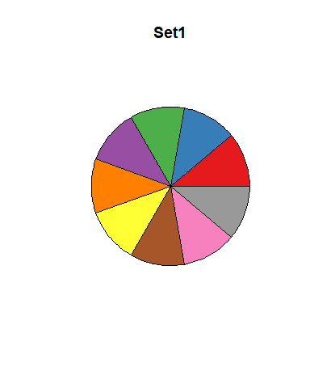
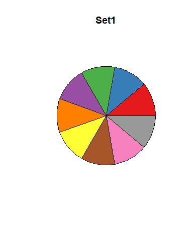

Introduction
Il y a beaucoup de couleurs disponibles dans R, mais elles ne sont pas toujours facilement visualisables. On expose ci-dessous une partie des possibilités avec R base et avec quelques packages (liste non exhaustive). Une fois n’est pas coutume, le code n’est pas réalisé avec le package ggplot2 mais en R base.
yellow et blue, pas toujours le meilleur choix
La couleur jaune dans R peut etre difficile a distinguer sur fond blanc, on peut la remplacer par la couleur “or” pour y remedier. Et un texte ecrit en noir sur fond bleu n’est pas plus facile a lire, les couleurs “royalblue” et “cornflowerblue” sont de bonnes alternatives.
plot(c(0,10), c(0.4,2.6), type = "n", xlab = "", ylab = "", axes = FALSE, frame.plot = TRUE)
lines(7:10,rep(1:2,2)-0.5,col="yellow");text(x=8.5,y=0.5,labels="yellow",cex=0.6,col="yellow")
lines(7:10,rep(1:2+0.5,2),col= "gold");text(x =8.5,y =2.5, labels= "gold", cex =0.6, col= "gold")
rect(0,1,2,2, col = "blue");text(x = 1, y = 1.5, labels = "blue", cex = 0.6)
rect(2,1,4,2, col = "royalblue");text(x = 3, y = 1.5, labels = "royalblue", cex = 0.6)
rect(4,1,6,2, col = "cornflowerblue");text(x = 5, y = 1.5, labels = "cornflowerblue", cex = 0.6)Liste alphabetique des couleurs de R base
Ces couleurs ne sont pas specifiques a R, cf https://fr.wikipedia.org/wiki/Noms_de_couleur_X11.
liste = colors()
# dimensions de la grille des couleurs
nbcol = 13
nbrow = ceiling(length(liste) / nbcol)
# fonction qui construit le kieme rectangle de la grille
# (grille construite de haut en bas, de la 1ere a la derniere colonne)
rectangle = function(k) {
i = (k-1) %% nbrow + 1
j = (k-1) %/% nbrow + 1
rect(xleft = j,ybottom = nbrow-i,
xright = j+1,ytop = nbrow-i+1,col = liste[k])
text(x = j+0.5, y = nbrow-i+0.5, labels = liste[k], cex = 0.6)
}
# on reduit les marges
omi_old = par("omi"); mai_old = par("mai")
par(omi = c(0,0,0,0)); par(mai = c(0,0,0,0))
plot.new(); plot.window(xlim = c(1, nbcol+1), ylim = c(1,nbrow+1))
# on applique la fonction rectangle a chaque couleur de R base
{invisible(lapply(seq_along(liste), rectangle))
# on retablit les marges pour la suite du document
par(omi = omi_old); par(mai = mai_old)}Toutes les variantes de bleus
Avec les expressions regulieres on peut selectionner les couleurs qui contiennent “blue” dans leur nom.
Addins
L’addin “Colour Picker” de Rstudio fournit une interface dynamique pour choisir dans la palette de couleurs standards ou pour definir la couleur de votre choix, cf https://deanattali.com/blog/colourpicker-package/.
Arc-en-ciel et degrades de couleurs en R base
Les degrades de 2 ou 3 couleurs conviennent bien pour des valeurs numeriques (par exemple rouge pour des correlations negatives, bleu pour les positives et blanc pour les nulles).
Les palettes arc-en-ciel sont a reserver aux variables qualitatives, mais meme dans ce cas elles ne conviennent pas vraiment car elles peuvent donner une impression de proximite entre certaines modalites (par exemple les 3 bleus ci-dessous).
Palettes du package RColorBrewer
Ce package propose des palettes de couleurs specifiques aux variables numeriques et aussi aux variables qualitatives, et on a la possibilite de filtrer les palettes de couleurs visibles par les daltoniens.
Palettes sequentielles : tons clairs >> sombres
A utiliser par exemple pour des variables numeriques a valeurs positives.
Palettes divergentes : tons sombres >> clairs >> sombres
On peut les utiliser pour visualiser une matrice de correlations.
Palettes qualitatives : contrastes entre couleurs successives
Palettes tres adaptees aux variables qualitatives avec au plus une dizaine de modalites.
m = c(8,8,12,9,8,9,8,12)
palettes = c("Accent", "Dark2", "Paired", "Pastel1", "Pastel2", "Set1", "Set2", "Set3")
for (i in 1:8) {
pie(rep(1,m[i]),
col = brewer.pal(m[i],palettes[i]), labels = "", main = palettes[i])}
 

Palettes du package viridisLite
Quelques jolies palettes de couleurs sequentielles concues a l’origine dans des bibliotheques Python.
library("viridisLite")
liste = list(magma = magma, inferno = inferno, plasma = plasma, viridis = viridis)
for (i in 1:4) {
pie(rep(1,9), col = liste[[i]](9),
labels = "", main = names(liste)[i])}
Quelques palettes du package khroma
Trois palettes respectivement qualitatives, divergentes et sequentielles.
Afficher une palette de couleurs avec une seule commande
Si vous n’aimez pas les diagrammes circulaires ou les grilles precedentes pour visualiser une palette de couleurs, ou que vous avez oublie le code pour les realiser, la fonction show_col du package scales sera votre amie :
cex = 0.6
scales::show_col(colors()[1:100], cex_label = cex)
scales::show_col(colors()[101:200], cex_label = cex)
scales::show_col(colors()[201:300], cex_label = cex)
scales::show_col(colors()[301:400], cex_label = cex)
scales::show_col(colors()[401:500], cex_label = cex)
scales::show_col(colors()[501:600], cex_label = cex)
scales::show_col(colors()[601:657], cex_label = cex)